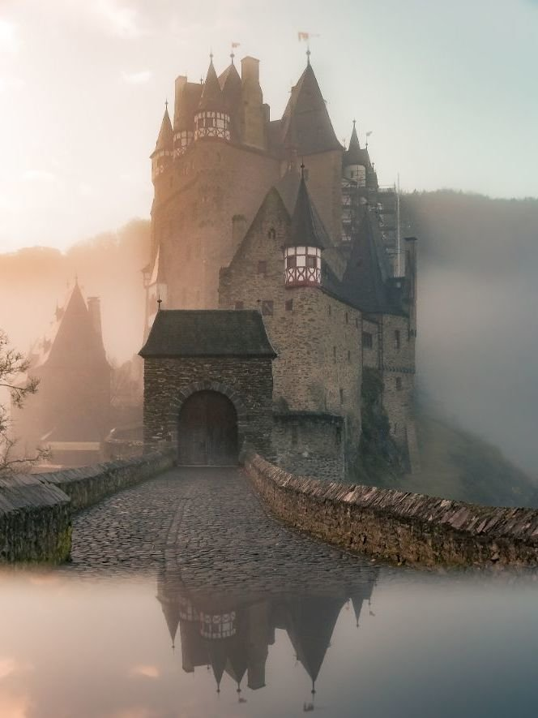
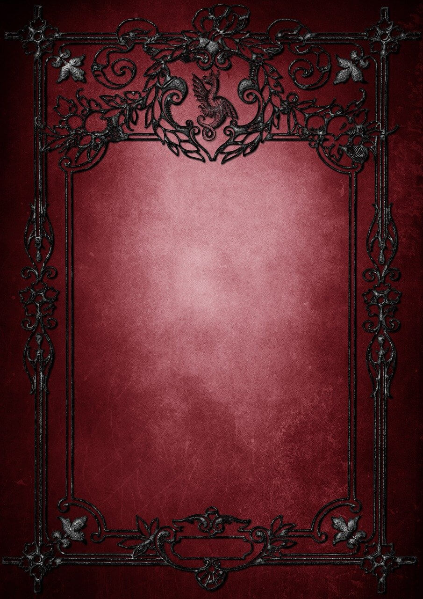
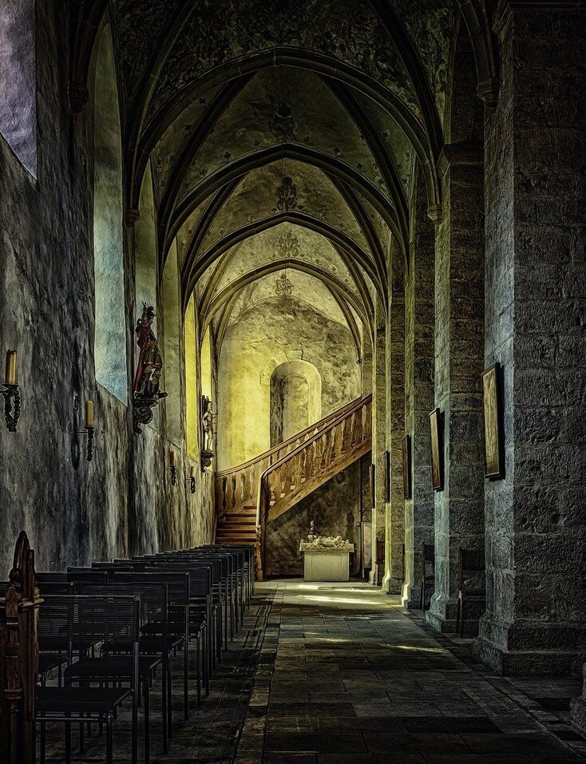

Książęca Litość

Królestwo Lantrewii od zawsze słynęło z celebracji głębokiej czerwieni. Niewiasty obdarzone płomiennymi włosami wynoszono na piedestały, a karmazynowe końskie grzywy stały się z czasem symbolem korony.
W roku 1355 Nowej Ery nawet złociste, jesienne listowie przybrało barwę czerwieni - zrosiła je krew. Zbuntowani chłopi, prowadzeni przez miejscowego kowala, zwanego „Młotnikiem”, dokonali już wielu rozbojów wzdłuż Spiżowego Traktu i ciągle rośli na siłę. W końcu jednak rewolta przyciągnęła uwagę samego możnowładcy tych ziem - Donovana de’Laenard. Książeca cierpliwość miała wkrótce się skończyć...
Cień Shalmary
Od trzech lat trwa wojna Dursko-Mardawska. Niedawna stagnacja została ostatecznie przełamana i armie ponownie stanęły naprzeciw siebie, tym razem pod owianą złą sławą górą, Shalmarą. Ostatecznie to Mardawczycy przeważyli, ponosząc jednak ciężkie straty.
Po zwycięskiej bitwie ranny sir Lathaniel von Ednar wyrusza w podróż powrotną na ziemie swego rodu. Obrazy krwawych starć i echo szczęku stali wciąż nie pozwalają mu o sobie zapomnieć i powracają we wspomnieniach. Zostawiwszy za sobą pasmo Arm postanawia nieco odpocząć w pobliskiej wiosce, lecz czy uda mu sie opuścić cień Shalmary?
Pobierz za darmo
Legenda Tirinalsi

Do drzwi pewnego domostwa, zbudowanego na uboczu miejskiego skweru, zapukała nie mająca litości śmierć. Wydała ona odroczony w czasie wyrok na szarą elfkę, Ivvę. Przez lata jej mąż, Evan, zmagał się z dręczącymi go koszmarami, będącymi pokłosiem nieuleczalnej choroby jego żony.
Stan Ivvy powoli, lecz nieuchronnie, ulegał pogorszeniu wraz z mijającymi miesiącami. W końcu czarę goryczy przelały złowróżbne rokowania zajmującego się nią medyka. Wtedy Evan podjął decyzję. Postanowił opowiedzieć jej tajemniczą legendę, będącą preludium do największej i najniebezpieczniejszej wyprawy ich życia. Być może również ich ostatniej…
Cena Wolności

Podziemne miasto Hirde’dun stoi na tolerancji – również tolerancji wobec zła, równości – ale tylko wewnątrzklasowej i wolności – ale tylko dla obywateli. Zło zakute w kajdany cywilizacji jest wygodne zwłaszcza, gdy oferuje władzę i luksusy. Hegemonię posiada arystokracja, wspólnie władająca jako Rada. Uciemiężeni niewolnicy zapewniają siłę roboczą do najgorszych i najcięższych prac. Ich życia mijają wedle planu ich panów, pod groźbą „gościny” w Kazamatach Katorżnictwa.
Bractwo Handlowe rządzi rynkiem niewolników, a kluczem ich sukcesu jest rzetelność, profesjonalizm i poufność. Ci, którzy walczą z potęgą Hirde’dun wydają sie być skazani na porażkę, lecz mimo to w mrokach miasta skryła się organizacja ratująca pojedyncze dusze od jarzma.